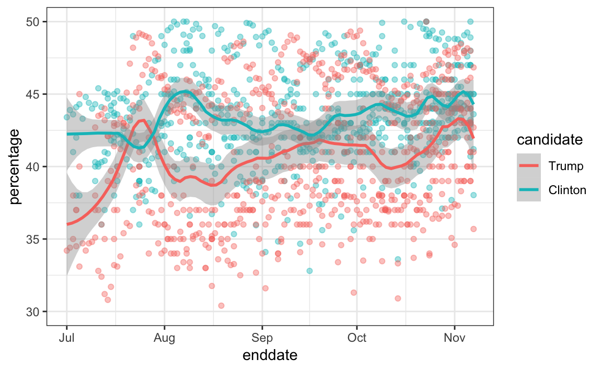

Chapter 16 Statistical models
“All models are wrong, but some are useful.” –George E. P. Box
The day before the 2008 presidential election, Nate Silver’s FiveThirtyEight stated that “Barack Obama appears poised for a decisive electoral victory”. They went further and predicted that Obama would win the election with 349 electoral votes to 189, and the popular vote by a margin of 6.1%. FiveThirtyEight also attached a probabilistic statement to their prediction claiming that Obama had a 91% chance of winning the election. The predictions were quite accurate since, in the final results, Obama won the electoral college 365 to 173 and the popular vote by a 7.2% difference. Their performance in the 2008 election brought FiveThirtyEight to the attention of political pundits and TV personalities. Four years later, the week before the 2012 presidential election, FiveThirtyEight’s Nate Silver was giving Obama a 90% chance of winning despite many of the experts thinking the final results would be closer. Political commentator Joe Scarborough said during his show58:
Anybody that thinks that this race is anything but a toss-up right now is such an ideologue … they’re jokes.
To which Nate Silver responded via Twitter:
If you think it’s a toss-up, let’s bet. If Obama wins, you donate $1,000 to the American Red Cross. If Romney wins, I do. Deal?
In 2016, Silver was not as certain and gave Hillary Clinton only a 71% of winning. In contrast, most other forecasters were almost certain she would win. She lost. But 71% is still more than 50%, so was Mr. Silver wrong? And what does probability mean in this context anyway? Are dice being tossed somewhere?
In this chapter we will demonstrate how poll aggregators, such as FiveThirtyEight, collected and combined data reported by different experts to produce improved predictions. We will introduce ideas behind the statistical models, also known as probability models, that were used by poll aggregators to improve election forecasts beyond the power of individual polls. In this chapter, we motivate the models, building on the statistical inference concepts we learned in Chapter 15. We start with relatively simple models, realizing that the actual data science exercise of forecasting elections involves rather complex ones, which we introduce towards the end of the chapter in Section 16.8.
16.1 Poll aggregators
As we described earlier, a few weeks before the 2012 election Nate Silver was giving Obama a 90% chance of winning. How was Mr. Silver so confident? We will use a Monte Carlo simulation to illustrate the insight Mr. Silver had and others missed. To do this, we generate results for 12 polls taken the week before the election. We mimic sample sizes from actual polls and construct and report 95% confidence intervals for each of the 12 polls. We save the results from this simulation in a data frame and add a poll ID column.
library(tidyverse)
library(dslabs)
d <- 0.039
Ns <- c(1298, 533, 1342, 897, 774, 254, 812, 324, 1291, 1056, 2172, 516)
p <- (d + 1) / 2
polls <- map_df(Ns, function(N) {
x <- sample(c(0,1), size=N, replace=TRUE, prob=c(1-p, p))
x_hat <- mean(x)
se_hat <- sqrt(x_hat * (1 - x_hat) / N)
list(estimate = 2 * x_hat - 1,
low = 2*(x_hat - 1.96*se_hat) - 1,
high = 2*(x_hat + 1.96*se_hat) - 1,
sample_size = N)
}) %>% mutate(poll = seq_along(Ns))Here is a visualization showing the intervals the pollsters would have reported for the difference between Obama and Romney:

Not surprisingly, all 12 polls report confidence intervals that include the election night result (dashed line). However, all 12 polls also include 0 (solid black line) as well. Therefore, if asked individually for a prediction, the pollsters would have to say: it’s a toss-up. Below we describe a key insight they are missing.
Poll aggregators, such as Nate Silver, realized that by combining the results of different polls you could greatly improve precision. By doing this, we are effectively conducting a poll with a huge sample size. We can therefore report a smaller 95% confidence interval and a more precise prediction.
Although as aggregators we do not have access to the raw poll data, we can use mathematics to reconstruct what we would have obtained had we made one large poll with:
participants. Basically, we construct an estimate of the spread, let’s call it \(d\), with a weighted average in the following way:
Once we have an estimate of \(d\), we can construct an estimate for the proportion voting for Obama, which we can then use to estimate the standard error. Once we do this, we see that our margin of error is 0.018.
Thus, we can predict that the spread will be 3.1 plus or minus 1.8, which not only includes the actual result we eventually observed on election night, but is quite far from including 0. Once we combine the 12 polls, we become quite certain that Obama will win the popular vote.
Of course, this was just a simulation to illustrate the idea. The actual data science exercise of forecasting elections is much more complicated and it involves modeling. Below we explain how pollsters fit multilevel models to the data and use this to forecast election results. In the 2008 and 2012 US presidential elections, Nate Silver used this approach to make an almost perfect prediction and silence the pundits.
Since the 2008 elections, other organizations have started their own election forecasting group that, like Nate Silver’s, aggregates polling data and uses statistical models to make predictions. In 2016, forecasters underestimated Trump’s chances of winning greatly. The day before the election the New York Times reported59 the following probabilities for Hillary Clinton winning the presidency:
| NYT | 538 | HuffPost | PW | PEC | DK | Cook | Roth | |
|---|---|---|---|---|---|---|---|---|
| Win Prob | 85% | 71% | 98% | 89% | >99% | 92% | Lean Dem | Lean Dem |
For example, the Princeton Election Consortium (PEC) gave Trump less than 1% chance of winning, while the Huffington Post gave him a 2% chance. In contrast, FiveThirtyEight had Trump’s probability of winning at 29%, higher than tossing two coins and getting two heads. In fact, four days before the election FiveThirtyEight published an article titled Trump Is Just A Normal Polling Error Behind Clinton60. By understanding statistical models and how these forecasters use them, we will start to understand how this happened.
Although not nearly as interesting as predicting the electoral college, for illustrative purposes we will start by looking at predictions for the popular vote. FiveThirtyEight predicted a 3.6% advantage for Clinton61, included the actual result of 2.1% (48.2% to 46.1%) in their interval, and was much more confident about Clinton winning the election, giving her an 81.4% chance. Their prediction was summarized with a chart like this:

The colored areas represent values with an 80% chance of including the actual result, according to the FiveThirtyEight model.
We introduce actual data from the 2016 US presidential election to show how models are motivated and built to produce these predictions. To understand the “81.4% chance” statement we need to describe Bayesian statistics, which we do in Sections 16.4 and 16.8.1.
16.1.1 Poll data
We use public polling data organized by FiveThirtyEight for the 2016 presidential election. The data is included as part of the dslabs package:
The table includes results for national polls, as well as state polls, taken during the year prior to the election. For this first example, we will filter the data to include national polls conducted during the week before the election. We also remove polls that FiveThirtyEight has determined not to be reliable and graded with a “B” or less. Some polls have not been graded and we include those:
polls <- polls_us_election_2016 %>%
filter(state == "U.S." & enddate >= "2016-10-31" &
(grade %in% c("A+","A","A-","B+") | is.na(grade)))We add a spread estimate:
For this example, we will assume that there are only two parties and call \(p\) the proportion voting for Clinton and \(1-p\) the proportion voting for Trump. We are interested in the spread \(2p-1\). Let’s call the spread \(d\) (for difference).
We have 49 estimates of the spread. The theory we learned tells us that these estimates are a random variable with a probability distribution that is approximately normal. The expected value is the election night spread \(d\) and the standard error is \(2\sqrt{p (1 - p) / N}\). Assuming the urn model we described earlier is a good one, we can use this information to construct a confidence interval based on the aggregated data. The estimated spread is:
and the standard error is:
p_hat <- (d_hat+1)/2
moe <- 1.96 * 2 * sqrt(p_hat * (1 - p_hat) / sum(polls$samplesize))
moe
#> [1] 0.00662So we report a spread of 1.43% with a margin of error of 0.66%. On election night, we discover that the actual percentage was 2.1%, which is outside a 95% confidence interval. What happened?
A histogram of the reported spreads shows a problem:

The data does not appear to be normally distributed and the standard error appears to be larger than 0.007. The theory is not quite working here.
16.1.2 Pollster bias
Notice that various pollsters are involved and some are taking several polls a week:
polls %>% group_by(pollster) %>% summarize(n())
#> `summarise()` ungrouping output (override with `.groups` argument)
#> # A tibble: 15 x 2
#> pollster `n()`
#> <fct> <int>
#> 1 ABC News/Washington Post 7
#> 2 Angus Reid Global 1
#> 3 CBS News/New York Times 2
#> 4 Fox News/Anderson Robbins Research/Shaw & Company Research 2
#> 5 IBD/TIPP 8
#> # … with 10 more rowsLet’s visualize the data for the pollsters that are regularly polling:

This plot reveals an unexpected result. First, consider that the standard error predicted by theory for each poll:
polls %>% group_by(pollster) %>%
filter(n() >= 6) %>%
summarize(se = 2 * sqrt(p_hat * (1-p_hat) / median(samplesize)))
#> `summarise()` ungrouping output (override with `.groups` argument)
#> # A tibble: 5 x 2
#> pollster se
#> <fct> <dbl>
#> 1 ABC News/Washington Post 0.0265
#> 2 IBD/TIPP 0.0333
#> 3 Ipsos 0.0225
#> 4 The Times-Picayune/Lucid 0.0196
#> 5 USC Dornsife/LA Times 0.0183is between 0.018 and 0.033, which agrees with the within poll variation we see. However, there appears to be differences across the polls. Note, for example, how the USC Dornsife/LA Times pollster is predicting a 4% win for Trump, while Ipsos is predicting a win larger than 5% for Clinton. The theory we learned says nothing about different pollsters producing polls with different expected values. All the polls should have the same expected value. FiveThirtyEight refers to these differences as “house effects”. We also call them pollster bias.
In the following section, rather than use the urn model theory, we are instead going to develop a data-driven model.
16.2 Data-driven models
For each pollster, let’s collect their last reported result before the election:
one_poll_per_pollster <- polls %>% group_by(pollster) %>%
filter(enddate == max(enddate)) %>%
ungroup()Here is a histogram of the data for these 15 pollsters:

In the previous section, we saw that using the urn model theory to combine these results might not be appropriate due to the pollster effect. Instead, we will model this spread data directly.
The new model can also be thought of as an urn model, although the connection is not as direct. Rather than 0s (Republicans) and 1s (Democrats), our urn now contains poll results from all possible pollsters. We assume that the expected value of our urn is the actual spread \(d=2p-1\).
Because instead of 0s and 1s, our urn contains continuous numbers between -1 and 1, the standard deviation of the urn is no longer \(\sqrt{p(1-p)}\). Rather than voter sampling variability, the standard error now includes the pollster-to-pollster variability. Our new urn also includes the sampling variability from the polling. Regardless, this standard deviation is now an unknown parameter. In statistics textbooks, the Greek symbol \(\sigma\) is used to represent this parameter.
In summary, we have two unknown parameters: the expected value \(d\) and the standard deviation \(\sigma\).
Our task is to estimate \(d\). Because we model the observed values \(X_1,\dots X_N\) as a random sample from the urn, the CLT might still work in this situation because it is an average of independent random variables. For a large enough sample size \(N\), the probability distribution of the sample average \(\bar{X}\) is approximately normal with expected value \(\mu\) and standard error \(\sigma/\sqrt{N}\). If we are willing to consider \(N=15\) large enough, we can use this to construct confidence intervals.
A problem is that we don’t know \(\sigma\). But theory tells us that we can estimate the urn model \(\sigma\) with the sample standard deviation defined as \(s = \sqrt{ \sum_{i=1}^N (X_i - \bar{X})^2 / (N-1)}\).
Unlike for the population standard deviation definition, we now divide by \(N-1\). This makes \(s\) a better estimate of \(\sigma\). There is a mathematical explanation for this, which is explained in most statistics textbooks, but we don’t cover it here.
The sd function in R computes the sample standard deviation:
We are now ready to form a new confidence interval based on our new data-driven model:
results <- one_poll_per_pollster %>%
summarize(avg = mean(spread),
se = sd(spread) / sqrt(length(spread))) %>%
mutate(start = avg - 1.96 * se,
end = avg + 1.96 * se)
round(results * 100, 1)
#> avg se start end
#> 1 2.9 0.6 1.7 4.1Our confidence interval is wider now since it incorporates the pollster variability. It does include the election night result of 2.1%. Also, note that it was small enough not to include 0, which means we were confident Clinton would win the popular vote.
Are we now ready to declare a probability of Clinton winning the popular vote? Not yet. In our model \(d\) is a fixed parameter so we can’t talk about probabilities. To provide probabilities, we will need to learn about Bayesian statistics.
16.3 Exercises
We have been using urn models to motivate the use of probability models. Most data science applications are not related to data obtained from urns. More common are data that come from individuals. The reason probability plays a role here is because the data come from a random sample. The random sample is taken from a population and the urn serves as an analogy for the population.
Let’s revisit the heights dataset. Suppose we consider the males in our course the population.
1. Mathematically speaking, x is our population. Using the urn analogy, we have an urn with the values of x in it. What are the average and standard deviation of our population?
2. Call the population average computed above \(\mu\) and the standard deviation \(\sigma\). Now take a sample of size 50, with replacement, and construct an estimate for \(\mu\) and \(\sigma\).
3. What does the theory tell us about the sample average \(\bar{X}\) and how it is related to \(\mu\)?
- It is practically identical to \(\mu\).
- It is a random variable with expected value \(\mu\) and standard error \(\sigma/\sqrt{N}\).
- It is a random variable with expected value \(\mu\) and standard error \(\sigma\).
- Contains no information.
4. So how is this useful? We are going to use an oversimplified yet illustrative example. Suppose we want to know the average height of our male students, but we only get to measure 50 of the 708. We will use \(\bar{X}\) as our estimate. We know from the answer to exercise 3 that the standard estimate of our error \(\bar{X}-\mu\) is \(\sigma/\sqrt{N}\). We want to compute this, but we don’t know \(\sigma\). Based on what is described in this section, show your estimate of \(\sigma\).
5. Now that we have an estimate of \(\sigma\), let’s call our estimate \(s\). Construct a 95% confidence interval for \(\mu\).
6. Now run a Monte Carlo simulation in which you compute 10,000 confidence intervals as you have just done. What proportion of these intervals include \(\mu\)?
7. In this section, we talked about pollster bias. We used visualization to motivate the presence of such bias. Here we will give it a more rigorous treatment. We will consider two pollsters that conducted daily polls. We will look at national polls for the month before the election.
data(polls_us_election_2016)
polls <- polls_us_election_2016 %>%
filter(pollster %in% c("Rasmussen Reports/Pulse Opinion Research",
"The Times-Picayune/Lucid") &
enddate >= "2016-10-15" &
state == "U.S.") %>%
mutate(spread = rawpoll_clinton/100 - rawpoll_trump/100) We want to answer the question: is there a poll bias? Make a plot showing the spreads for each poll.
8. The data does seem to suggest there is a difference. However, these data are subject to variability. Perhaps the differences we observe are due to chance.
The urn model theory says nothing about pollster effect. Under the urn model, both pollsters have the same expected value: the election day difference, that we call \(d\).
To answer the question “is there an urn model?”, we will model the observed data \(Y_{i,j}\) in the following way:
\[ Y_{i,j} = d + b_i + \varepsilon_{i,j} \]
with \(i=1,2\) indexing the two pollsters, \(b_i\) the bias for pollster \(i\) and \(\varepsilon_ij\) poll to poll chance variability. We assume the \(\varepsilon\) are independent from each other, have expected value \(0\) and standard deviation \(\sigma_i\) regardless of \(j\).
Which of the following best represents our question?
- Is \(\varepsilon_{i,j}\) = 0?
- How close are the \(Y_{i,j}\) to \(d\)?
- Is \(b_1 \neq b_2\)?
- Are \(b_1 = 0\) and \(b_2 = 0\) ?
9. In the right side of this model only \(\varepsilon_{i,j}\) is a random variable. The other two are constants. What is the expected value of \(Y_{1,j}\)?
10. Suppose we define \(\bar{Y}_1\) as the average of poll results from the first poll, \(Y_{1,1},\dots,Y_{1,N_1}\) with \(N_1\) the number of polls conducted by the first pollster:
What is the expected values \(\bar{Y}_1\)?
11. What is the standard error of \(\bar{Y}_1\) ?
12. Suppose we define \(\bar{Y}_2\) as the average of poll results from the first poll, \(Y_{2,1},\dots,Y_{2,N_2}\) with \(N_2\) the number of polls conducted by the first pollster. What is the expected value \(\bar{Y}_2\)?
13. What is the standard error of \(\bar{Y}_2\) ?
14. Using what we learned by answering the questions above, what is the expected value of \(\bar{Y}_{2} - \bar{Y}_1\)?
15. Using what we learned by answering the questions above, what is the standard error of \(\bar{Y}_{2} - \bar{Y}_1\)?
16. The answer to the question above depends on \(\sigma_1\) and \(\sigma_2\), which we don’t know. We learned that we can estimate these with the sample standard deviation. Write code that computes these two estimates.
17. What does the CLT tell us about the distribution of \(\bar{Y}_2 - \bar{Y}_1\)?
- Nothing because this is not the average of a sample.
- Because the \(Y_{ij}\) are approximately normal, so are the averages.
- Note that \(\bar{Y}_2\) and \(\bar{Y}_1\) are sample averages, so if we assume \(N_2\) and \(N_1\) are large enough, each is approximately normal. The difference of normals is also normal.
- The data are not 0 or 1, so CLT does not apply.
18. We have constructed a random variable that has expected value \(b_2 - b_1\), the pollster bias difference. If our model holds, then this random variable has an approximately normal distribution and we know its standard error. The standard error depends on \(\sigma_1\) and \(\sigma_2\), but we can plug the sample standard deviations we computed above. We started off by asking: is \(b_2 - b_1\) different from 0? Use all the information we have learned above to construct a 95% confidence interval for the difference \(b_2\) and \(b_1\).
19. The confidence interval tells us there is relatively strong pollster effect resulting in a difference of about 5%. Random variability does not seem to explain it. We can compute a p-value to relay the fact that chance does not explain it. What is the p-value?
20. The statistic formed by dividing our estimate of \(b_2-b_1\) by its estimated standard error:
\[ \frac{\bar{Y}_2 - \bar{Y}_1}{\sqrt{s_2^2/N_2 + s_1^2/N_1}} \]
is called the t-statistic. Now notice that we have more than two pollsters. We can also test for pollster effect using all pollsters, not just two. The idea is to compare the variability across polls to variability within polls. We can actually construct statistics to test for effects and approximate their distribution. The area of statistics that does this is called Analysis of Variance or ANOVA. We do not cover it here, but ANOVA provides a very useful set of tools to answer questions such as: is there a pollster effect?
For this exercise, create a new table:
polls <- polls_us_election_2016 %>%
filter(enddate >= "2016-10-15" &
state == "U.S.") %>%
group_by(pollster) %>%
filter(n() >= 5) %>%
mutate(spread = rawpoll_clinton/100 - rawpoll_trump/100) %>%
ungroup()Compute the average and standard deviation for each pollster and examine the variability across the averages and how it compares to the variability within the pollsters, summarized by the standard deviation.
16.4 Bayesian statistics
What does it mean when an election forecaster tells us that a given candidate has a 90% chance of winning? In the context of the urn model, this would be equivalent to stating that the probability \(p>0.5\) is 90%. However, as we discussed earlier, in the urn model \(p\) is a fixed parameter and it does not make sense to talk about probability. With Bayesian statistics, we model \(p\) as random variable and thus a statement such as “90% chance of winning” is consistent with the approach.
Forecasters also use models to describe variability at different levels. For example, sampling variability, pollster to pollster variability, day to day variability, and election to election variability. One of the most successful approaches used for this are hierarchical models, which can be explained in the context of Bayesian statistics.
In this chapter we briefly describe Bayesian statistics. For an in-depth treatment of this topic we recommend one of the following textbooks:
Berger JO (1985). Statistical Decision Theory and Bayesian Analysis, 2nd edition. Springer-Verlag.
Lee PM (1989). Bayesian Statistics: An Introduction. Oxford.
16.4.1 Bayes theorem
We start by describing Bayes theorem. We do this using a hypothetical cystic fibrosis test as an example. Suppose a test for cystic fibrosis has an accuracy of 99%. We will use the following notation:
\[ \mbox{Prob}(+ \mid D=1)=0.99, \mbox{Prob}(- \mid D=0)=0.99 \]
with \(+\) meaning a positive test and \(D\) representing if you actually have the disease (1) or not (0).
Suppose we select a random person and they test positive. What is the probability that they have the disease? We write this as \(\mbox{Prob}(D=1 \mid +)?\) The cystic fibrosis rate is 1 in 3,900 which implies that \(\mbox{Prob}(D=1)=0.00025\). To answer this question, we will use Bayes theorem, which in general tells us that:
\[ \mbox{Pr}(A \mid B) = \frac{\mbox{Pr}(B \mid A)\mbox{Pr}(A)}{\mbox{Pr}(B)} \]
This equation applied to our problem becomes:
\[ \begin{aligned} \mbox{Pr}(D=1 \mid +) & = \frac{ P(+ \mid D=1) \cdot P(D=1)} {\mbox{Pr}(+)} \\ & = \frac{\mbox{Pr}(+ \mid D=1)\cdot P(D=1)} {\mbox{Pr}(+ \mid D=1) \cdot P(D=1) + \mbox{Pr}(+ \mid D=0) \mbox{Pr}( D=0)} \end{aligned} \]
Plugging in the numbers we get:
\[ \frac{0.99 \cdot 0.00025}{0.99 \cdot 0.00025 + 0.01 \cdot (.99975)} = 0.02 \]
This says that despite the test having 0.99 accuracy, the probability of having the disease given a positive test is only 0.02. This may appear counter-intuitive to some, but the reason this is the case is because we have to factor in the very rare probability that a person, chosen at random, has the disease. To illustrate this, we run a Monte Carlo simulation.
16.5 Bayes theorem simulation
The following simulation is meant to help you visualize Bayes theorem. We start by randomly selecting 100,000 people from a population in which the disease in question has a 1 in 4,000 prevalence.
prev <- 0.00025
N <- 100000
outcome <- sample(c("Disease","Healthy"), N, replace = TRUE,
prob = c(prev, 1 - prev))Note that there are very few people with the disease:
Also, there are many without the disease, which makes it more probable that we will see some false positives given that the test is not perfect. Now each person gets the test, which is correct 99% of the time:
accuracy <- 0.99
test <- vector("character", N)
test[outcome == "Disease"] <- sample(c("+", "-"), N_D, replace = TRUE,
prob = c(accuracy, 1 - accuracy))
test[outcome == "Healthy"] <- sample(c("-", "+"), N_H, replace = TRUE,
prob = c(accuracy, 1 - accuracy))Because there are so many more controls than cases, even with a low false positive rate we get more controls than cases in the group that tested positive:
From this table, we see that the proportion of positive tests that have the disease is 23 out of 988. We can run this over and over again to see that, in fact, the probability converges to about 0.022.
16.5.1 Bayes in practice
José Iglesias is a professional baseball player. In April 2013, when he was starting his career, he was performing rather well:
| Month | At Bats | H | AVG |
|---|---|---|---|
| April | 20 | 9 | .450 |
The batting average (AVG) statistic is one way of measuring success. Roughly speaking, it tells us the success rate when batting. An AVG of .450 means José has been successful 45% of the times he has batted (At Bats) which is rather high, historically speaking. Keep in mind that no one has finished a season with an AVG of .400 or more since Ted Williams did it in 1941! To illustrate the way hierarchical models are powerful, we will try to predict José’s batting average at the end of the season. Note that in a typical season, players have about 500 at bats.
With the techniques we have learned up to now, referred to as frequentist techniques, the best we can do is provide a confidence interval. We can think of outcomes from hitting as a binomial with a success rate of \(p\). So if the success rate is indeed .450, the standard error of just 20 at bats is:
\[ \sqrt{\frac{.450 (1-.450)}{20}}=.111 \]
This means that our confidence interval is \(.450 - .222\) to \(.450 + .222\) or \(.228\) to \(.672\).
This prediction has two problems. First, it is very large, so not very useful. Second, it is centered at .450, which implies that our best guess is that this new player will break Ted Williams’ record.
If you follow baseball, this last statement will seem wrong and this is because you are implicitly using a hierarchical model that factors in information from years of following baseball. Here we show how we can quantify this intuition.
First, let’s explore the distribution of batting averages for all players with more than 500 at bats during the previous three seasons:

The average player had an AVG of .275 and the standard deviation of the population of players was 0.027. So we can see already that .450 would be quite an anomaly since it is over six standard deviations away from the mean.
So is José lucky or is he the best batter seen in the last 50 years? Perhaps it’s a combination of both luck and talent. But how much of each? If we become convinced that he is lucky, we should trade him to a team that trusts the .450 observation and is maybe overestimating his potential.
16.6 Hierarchical models
The hierarchical model provides a mathematical description of how we came to see the observation of .450. First, we pick a player at random with an intrinsic ability summarized by, for example, \(p\). Then we see 20 random outcomes with success probability \(p\).
We use a model to represent two levels of variability in our data. First, each player is assigned a natural ability to hit. We will use the symbol \(p\) to represent this ability. You can think of \(p\) as the batting average you would converge to if this particular player batted over and over again.
Based on the plots we showed earlier, we assume that \(p\) has a normal distribution. With expected value .270 and standard error 0.027.
Now the second level of variability has to do with luck when batting. Regardless of how good the player is, sometimes you have bad luck and sometimes you have good luck. At each at bat, this player has a probability of success \(p\). If we add up these successes and failures, then the CLT tells us that the observed average, call it \(Y\), has a normal distribution with expected value \(p\) and standard error \(\sqrt{p(1-p)/N}\) with \(N\) the number of at bats.
Statistical textbooks will write the model like this: \[ \begin{aligned} p &\sim N(\mu, \tau^2) \\ Y \mid p &\sim N(p, \sigma^2) \end{aligned} \] Here the \(\sim\) symbol tells us the random variable on the left of the symbol follows the distribution on the right and \(N(a,b^2)\) represents the normal distribution with mean \(a\) and standard deviation \(b\). The \(\mid\) is read as conditioned on, and it means that we are treating the random variable to the right of the symbol as known. We refer to the model as hierarchical because we need to know \(p\), the first level, in order to model \(Y\), the second level. In our example the first level describes randomness in assigning talent to a player and the second describes randomness in this particular player’s performance once we have fixed the talent parameter. In a Bayesian framework, the first level is called a prior distribution and the second the sampling distribution. The data analysis we have conducted here suggests that we set \(\mu = .270\), \(\tau = 0.027\), and \(\sigma^2 = p(1-p)/N\).
Now, let’s use this model for José’s data. Suppose we want to predict his innate ability in the form of his true batting average \(p\). This would be the hierarchical model for our data:
\[ \begin{aligned} p &\sim N(.275, .027^2) \\ Y \mid p &\sim N(p, .111^2) \end{aligned} \]
We now are ready to compute a posterior distribution to summarize our prediction of \(p\). The continuous version of Bayes’ rule can be used here to derive the posterior probability function, which is the distribution of \(p\) assuming we observe \(Y=y\). In our case, we can show that when we fix \(Y=y\), \(p\) follows a normal distribution with expected value:
\[ \begin{aligned} \mbox{E}(p \mid Y=y) &= B \mu + (1-B) y\\ &= \mu + (1-B)(y-\mu)\\ \mbox{with } B &= \frac{\sigma^2}{\sigma^2+\tau^2} \end{aligned} \]
This is a weighted average of the population average \(\mu\) and the observed data \(y\). The weight depends on the SD of the population \(\tau\) and the SD of our observed data \(\sigma\). This weighted average is sometimes referred to as shrinking because it shrinks estimates towards a prior mean. In the case of José Iglesias, we have:
\[ \begin{aligned} \mbox{E}(p \mid Y=.450) &= B \times .275 + (1 - B) \times .450 \\ &= .275 + (1 - B)(.450 - .275) \\ B &=\frac{.111^2}{.111^2 + .027^2} = 0.944\\ \mbox{E}(p \mid Y=450) &\approx .285 \end{aligned} \]
We do not show the derivation here, but the standard error can be shown to be:
\[ \mbox{SE}(p\mid y)^2 = \frac{1}{1/\sigma^2+1/\tau^2} = \frac{1}{1/.111^2 + 1/.027^2} = 0.00069 \] and the standard deviation is therefore \(0.026\). So we started with a frequentist 95% confidence interval that ignored data from other players and summarized just José’s data: .450 \(\pm\) 0.220. Then we used a Bayesian approach that incorporated data from other players and other years to obtain a posterior probability. This is actually referred to as an empirical Bayes approach because we used data to construct the prior. From the posterior, we can report what is called a 95% credible interval by reporting a region, centered at the mean, with a 95% chance of occurring. In our case, this turns out to be: .285 \(\pm\) 0.052.
The Bayesian credible interval suggests that if another team is impressed by the .450 observation, we should consider trading José as we are predicting he will be just slightly above average. Interestingly, the Red Sox traded José to the Detroit Tigers in July. Here are the José Iglesias batting averages for the next five months:
| Month | At Bat | Hits | AVG |
|---|---|---|---|
| April | 20 | 9 | .450 |
| May | 26 | 11 | .423 |
| June | 86 | 34 | .395 |
| July | 83 | 17 | .205 |
| August | 85 | 25 | .294 |
| September | 50 | 10 | .200 |
| Total w/o April | 330 | 97 | .293 |
Although both intervals included the final batting average, the Bayesian credible interval provided a much more precise prediction. In particular, it predicted that he would not be as good during the remainder of the season.
16.7 Exercises
1. In 1999, in England, Sally Clark62 was found guilty of the murder of two of her sons. Both infants were found dead in the morning, one in 1996 and another in 1998. In both cases, she claimed the cause of death was sudden infant death syndrome (SIDS). No evidence of physical harm was found on the two infants so the main piece of evidence against her was the testimony of Professor Sir Roy Meadow, who testified that the chances of two infants dying of SIDS was 1 in 73 million. He arrived at this figure by finding that the rate of SIDS was 1 in 8,500 and then calculating that the chance of two SIDS cases was 8,500 \(\times\) 8,500 \(\approx\) 73 million. Which of the following do you agree with?
- Sir Meadow assumed that the probability of the second son being affected by SIDS was independent of the first son being affected, thereby ignoring possible genetic causes. If genetics plays a role then: \(\mbox{Pr}(\mbox{second case of SIDS} \mid \mbox{first case of SIDS}) < \mbox{P}r(\mbox{first case of SIDS})\).
- Nothing. The multiplication rule always applies in this way: \(\mbox{Pr}(A \mbox{ and } B) =\mbox{Pr}(A)\mbox{Pr}(B)\)
- Sir Meadow is an expert and we should trust his calculations.
- Numbers don’t lie.
2. Let’s assume that there is in fact a genetic component to SIDS and the probability of \(\mbox{Pr}(\mbox{second case of SIDS} \mid \mbox{first case of SIDS}) = 1/100\), is much higher than 1 in 8,500. What is the probability of both of her sons dying of SIDS?
3. Many press reports stated that the expert claimed the probability of Sally Clark being innocent as 1 in 73 million. Perhaps the jury and judge also interpreted the testimony this way. This probability can be written as the probability of a mother is a son-murdering psychopath given that two of her children are found dead with no evidence of physical harm. According to Bayes’ rule, what is this?
4. Assume that the chance of a son-murdering psychopath finding a way to kill her children, without leaving evidence of physical harm, is:
\[ \mbox{Pr}(A \mid B) = 0.50 \]
with A = two of her children are found dead with no evidence of physical harm and B = a mother is a son-murdering psychopath = 0.50. Assume that the rate of son-murdering psychopaths mothers is 1 in 1,000,000. According to Bayes’ theorem, what is the probability of \(\mbox{Pr}(B \mid A)\) ?
5/. After Sally Clark was found guilty, the Royal Statistical Society issued a statement saying that there was “no statistical basis” for the expert’s claim. They expressed concern at the “misuse of statistics in the courts”. Eventually, Sally Clark was acquitted in June 2003. What did the expert miss?
- He made an arithmetic error.
- He made two mistakes. First, he misused the multiplication rule and did not take into account how rare it is for a mother to murder her children. After using Bayes’ rule, we found a probability closer to 0.5 than 1 in 73 million.
- He mixed up the numerator and denominator of Bayes’ rule.
- He did not use R.
6. Florida is one of the most closely watched states in the U.S. election because it has many electoral votes, and the election is generally close, and Florida tends to be a swing state that can vote either way. Create the following table with the polls taken during the last two weeks:
library(tidyverse)
library(dslabs)
data(polls_us_election_2016)
polls <- polls_us_election_2016 %>%
filter(state == "Florida" & enddate >= "2016-11-04" ) %>%
mutate(spread = rawpoll_clinton/100 - rawpoll_trump/100)Take the average spread of these polls. The CLT tells us this average is approximately normal. Calculate an average and provide an estimate of the standard error. Save your results in an object called results.
7. Now assume a Bayesian model that sets the prior distribution for Florida’s election night spread \(d\) to be Normal with expected value \(\mu\) and standard deviation \(\tau\). What are the interpretations of \(\mu\) and \(\tau\)?
- \(\mu\) and \(\tau\) are arbitrary numbers that let us make probability statements about \(d\).
- \(\mu\) and \(\tau\) summarize what we would predict for Florida before seeing any polls. Based on past elections, we would set \(\mu\) close to 0 because both Republicans and Democrats have won, and \(\tau\) at about \(0.02\), because these elections tend to be close.
- \(\mu\) and \(\tau\) summarize what we want to be true. We therefore set \(\mu\) at \(0.10\) and \(\tau\) at \(0.01\).
- The choice of prior has no effect on Bayesian analysis.
8. The CLT tells us that our estimate of the spread \(\hat{d}\) has normal distribution with expected value \(d\) and standard deviation \(\sigma\) calculated in problem 6. Use the formulas we showed for the posterior distribution to calculate the expected value of the posterior distribution if we set \(\mu = 0\) and \(\tau = 0.01\).
9. Now compute the standard deviation of the posterior distribution.
10. Using the fact that the posterior distribution is normal, create an interval that has a 95% probability of occurring centered at the posterior expected value. Note that we call these credible intervals.
11. According to this analysis, what was the probability that Trump wins Florida?
12. Now use sapply function to change the prior variance from seq(0.05, 0.05, len = 100) and observe how the probability changes by making a plot.
16.8 Case study: election forecasting
In a previous section, we generated these data tables:
library(tidyverse)
library(dslabs)
polls <- polls_us_election_2016 %>%
filter(state == "U.S." & enddate >= "2016-10-31" &
(grade %in% c("A+","A","A-","B+") | is.na(grade))) %>%
mutate(spread = rawpoll_clinton/100 - rawpoll_trump/100)
one_poll_per_pollster <- polls %>% group_by(pollster) %>%
filter(enddate == max(enddate)) %>%
ungroup()
results <- one_poll_per_pollster %>%
summarize(avg = mean(spread), se = sd(spread)/sqrt(length(spread))) %>%
mutate(start = avg - 1.96*se, end = avg + 1.96*se) Below, we will use these for our forecasting.
16.8.1 Bayesian approach
Pollsters tend to make probabilistic statements about the results of the election. For example, “The chance that Obama wins the electoral college is 91%” is a probabilistic statement about a parameter which in previous sections we have denoted with \(d\). We showed that for the 2016 election, FiveThirtyEight gave Clinton an 81.4% chance of winning the popular vote. To do this, they used the Bayesian approach we described.
We assume a hierarchical model similar to what we did to predict the performance of a baseball player. Statistical textbooks will write the model like this:
\[ \begin{aligned} d &\sim N(\mu, \tau^2) \mbox{ describes our best guess had we not seen any polling data}\\ \bar{X} \mid d &\sim N(d, \sigma^2) \mbox{ describes randomness due to sampling and the pollster effect} \end{aligned} \]
For our best guess, we note that before any poll data is available, we can use data sources other than polling data. A popular approach is to use what pollsters call fundamentals, which are based on properties about the current economy that historically appear to have an effect in favor or against the incumbent party. We won’t use these here. Instead, we will use \(\mu = 0\), which is interpreted as a model that simply does not provide any information on who will win. For the standard deviation, we will use recent historical data that shows the winner of the popular vote has an average spread of about 3.5%. Therefore, we set \(\tau = 0.035\).
Now we can use the formulas for the posterior distribution for the parameter \(d\): the probability of \(d>0\) given the observed poll data:
mu <- 0
tau <- 0.035
sigma <- results$se
Y <- results$avg
B <- sigma^2 / (sigma^2 + tau^2)
posterior_mean <- B*mu + (1-B)*Y
posterior_se <- sqrt( 1/ (1/sigma^2 + 1/tau^2))
posterior_mean
#> [1] 0.0281
posterior_se
#> [1] 0.00615To make a probability statement, we use the fact that the posterior distribution is also normal. And we have a credible interval of:
The posterior probability \(\mbox{Pr}(d>0 \mid \bar{X})\) can be computed like this:
This says we are 100% sure Clinton will win the popular vote, which seems too overconfident. Also, it is not in agreement with FiveThirtyEight’s 81.4%. What explains this difference?
16.8.2 The general bias
After elections are over, one can look at the difference between pollster predictions and actual result. An important observation that our model does not take into account is that it is common to see a general bias that affects many pollsters in the same way making the observed data correlated. There is no good explanation for this, but we do observe it in historical data: in one election, the average of polls favors Democrats by 2%, then in the following election they favor Republicans by 1%, then in the next election there is no bias, then in the following one Republicans are favored by 3%, and so on. In 2016, the polls were biased in favor of the Democrats by 1-2%.
Although we know this bias term affects our polls, we have no way of knowing what this bias is until election night. So we can’t correct our polls accordingly. What we can do is include a term in our model that accounts for this variability.
16.8.3 Mathematical representations of models
Suppose we are collecting data from one pollster and we assume there is no general bias. The pollster collects several polls with a sample size of \(N\), so we observe several measurements of the spread \(X_1, \dots, X_J\). The theory tells us that these random variables have expected value \(d\) and standard error \(2 \sqrt{p(1-p)/N}\). Let’s start by using the following model to describe the observed variability:
\[ X_j = d + \varepsilon_j. \] We use the index \(j\) to represent the different polls and we define \(\varepsilon_j\) to be a random variable that explains the poll-to-poll variability introduced by sampling error. To do this, we assume its average is 0 and standard error is \(2 \sqrt{p(1-p)/N}\). If \(d\) is 2.1 and the sample size for these polls is 2,000, we can simulate \(J=6\) data points from this model like this:
set.seed(3)
J <- 6
N <- 2000
d <- .021
p <- (d + 1)/2
X <- d + rnorm(J, 0, 2 * sqrt(p * (1 - p) / N))Now suppose we have \(J=6\) data points from \(I=5\) different pollsters. To represent this we now need two indexes, one for pollster and one for the polls each pollster takes. We use \(X_{ij}\) with \(i\) representing the pollster and \(j\) representing the \(j\)-th poll from that pollster. If we apply the same model, we write:
\[ X_{i,j} = d + \varepsilon_{i,j} \]
To simulate data, we now have to loop through the pollsters:
The simulated data does not really seem to capture the features of the actual data:

The model above does not account for pollster-to-pollster variability. To fix this, we add a new term for the pollster effect. We will use \(h_i\) to represent the house effect of the \(i\)-th pollster. The model is now augmented to:
\[ X_{i,j} = d + h_i + \varepsilon_{i,j} \]
To simulate data from a specific pollster, we now need to draw an \(h_i\) and then add the \(\varepsilon\)s. Here is how we would do it for one specific pollster. We assume \(\sigma_h\) is 0.025:
I <- 5
J <- 6
N <- 2000
d <- .021
p <- (d + 1) / 2
h <- rnorm(I, 0, 0.025)
X <- sapply(1:I, function(i){
d + h[i] + rnorm(J, 0, 2 * sqrt(p * (1 - p) / N))
})The simulated data now looks more like the actual data:

Note that \(h_i\) is common to all the observed spreads from a specific pollster. Different pollsters have a different \(h_i\), which explains why we can see the groups of points shift up and down from pollster to pollster.
Now, in the model above, we assume the average house effect is 0. We think that for every pollster biased in favor of our party, there is another one in favor of the other and assume the standard deviation is \(\sigma_h\). But historically we see that every election has a general bias affecting all polls. We can observe this with the 2016 data, but if we collect historical data, we see that the average of polls misses by more than models like the one above predict. To see this, we would take the average of polls for each election year and compare it to the actual value. If we did this, we would see a difference with a standard deviation of between 2-3%. To incorporate this into the model, we can add another term to account for this variability: \[ X_{i,j} = d + b + h_i + \varepsilon_{i,j}. \]
Here \(b\) is a random variable that accounts for the election-to-election variability. This random variable changes from election to election, but for any given election, it is the same for all pollsters and polls within on election. This is why it does not have indexes. This implies that all the random variables \(X_{i,j}\) for an election year are correlated since they all have \(b\) in common.
One way to interpret \(b\) is as the difference between the average of all polls from all pollsters and the actual result of the election. Because we don’t know the actual result until after the election, we can’t estimate \(b\) until after the election. However, we can estimate \(b\) from previous elections and study the distribution of these values. Based on this approach we assume that, across election years, \(b\) has expected value 0 and the standard error is about \(\sigma_b = 0.025\).
An implication of adding this term to the model is that the standard deviation for \(X_{i,j}\) is actually higher than what we earlier called \(\sigma\), which combines the pollster variability and the sample in variability, and was estimated with:
This estimate does not include the variability introduced by \(b\). Note that because
\[ \bar{X} = d + b + \frac{1}{N}\sum_{i=1}^N X_i, \]
the standard deviation of \(\bar{X}\) is:
\[ \sqrt{\sigma^2/N + \sigma_b^2}. \] Since the same \(b\) is in every measurement, the average does not reduce the variability introduced by the \(b\) term. This is an important point: it does not matter how many polls you take, this bias does not get reduced.
If we redo the Bayesian calculation taking this variability into account, we get a result much closer to FiveThirtyEight’s:
16.8.4 Predicting the electoral college
Up to now we have focused on the popular vote. But in the United States, elections are not decided by the popular vote but rather by what is known as the electoral college. Each state gets a number of electoral votes that depends, in a somewhat complex way, on the population size of the state. Here are the top 5 states ranked by electoral votes in 2016.
results_us_election_2016 %>% top_n(5, electoral_votes)
#> state electoral_votes clinton trump others
#> 1 California 55 61.7 31.6 6.7
#> 2 Texas 38 43.2 52.2 4.5
#> 3 Florida 29 47.8 49.0 3.2
#> 4 New York 29 59.0 36.5 4.5
#> 5 Illinois 20 55.8 38.8 5.4
#> 6 Pennsylvania 20 47.9 48.6 3.6With some minor exceptions we don’t discuss, the electoral votes are won all or nothing. For example, if you win California by just 1 vote, you still get all 55 of its electoral votes. This means that by winning a few big states by a large margin, but losing many small states by small margins, you can win the popular vote and yet lose the electoral college. This happened in 1876, 1888, 2000, and 2016. The idea behind this is to avoid a few large states having the power to dominate the presidential election. Nonetheless, many people in the US consider the electoral college unfair and would like to see it abolished.
We are now ready to predict the electoral college result for 2016. We start by aggregating results from a poll taken during the last week before the election. We use the str_detect, a function we introduce later in Section 24.1, to remove polls that are not for entire states.
results <- polls_us_election_2016 %>%
filter(state!="U.S." &
!str_detect(state, "CD") &
enddate >="2016-10-31" &
(grade %in% c("A+","A","A-","B+") | is.na(grade))) %>%
mutate(spread = rawpoll_clinton/100 - rawpoll_trump/100) %>%
group_by(state) %>%
summarize(avg = mean(spread), sd = sd(spread), n = n()) %>%
mutate(state = as.character(state))
#> `summarise()` ungrouping output (override with `.groups` argument)Here are the five closest races according to the polls:
results %>% arrange(abs(avg))
#> # A tibble: 47 x 4
#> state avg sd n
#> <chr> <dbl> <dbl> <int>
#> 1 Florida 0.00356 0.0163 7
#> 2 North Carolina -0.00730 0.0306 9
#> 3 Ohio -0.0104 0.0252 6
#> 4 Nevada 0.0169 0.0441 7
#> 5 Iowa -0.0197 0.0437 3
#> # … with 42 more rowsWe now introduce the command left_join that will let us easily add the number of electoral votes for each state from the dataset us_electoral_votes_2016. We will describe this function in detail in the Wrangling chapter. Here, we simply say that the function combines the two datasets so that the information from the second argument is added to the information in the first:
Notice that some states have no polls because the winner is pretty much known:
results_us_election_2016 %>% filter(!state %in% results$state) %>%
pull(state)
#> [1] "Rhode Island" "Alaska" "Wyoming"
#> [4] "District of Columbia"No polls were conducted in DC, Rhode Island, Alaska, and Wyoming because Democrats are sure to win in the first two and Republicans in the last two.
Because we can’t estimate the standard deviation for states with just one poll, we will estimate it as the median of the standard deviations estimated for states with more than one poll:
To make probabilistic arguments, we will use a Monte Carlo simulation. For each state, we apply the Bayesian approach to generate an election day \(d\). We could construct the priors for each state based on recent history. However, to keep it simple, we assign a prior to each state that assumes we know nothing about what will happen. Since from election year to election year the results from a specific state don’t change that much, we will assign a standard deviation of 2% or \(\tau=0.02\). For now, we will assume, incorrectly, that the poll results from each state are independent. The code for the Bayesian calculation under these assumptions looks like this:
#> # A tibble: 47 x 12
#> state avg sd n electoral_votes clinton trump others
#> <chr> <dbl> <dbl> <int> <int> <dbl> <dbl> <dbl>
#> 1 Alab… -0.149 2.53e-2 3 9 34.4 62.1 3.6
#> 2 Ariz… -0.0326 2.70e-2 9 11 45.1 48.7 6.2
#> 3 Arka… -0.151 9.90e-4 2 6 33.7 60.6 5.8
#> 4 Cali… 0.260 3.87e-2 5 55 61.7 31.6 6.7
#> 5 Colo… 0.0452 2.95e-2 7 9 48.2 43.3 8.6
#> # … with 42 more rows, and 4 more variables: sigma <dbl>, B <dbl>,
#> # posterior_mean <dbl>, posterior_se <dbl>The estimates based on posterior do move the estimates towards 0, although the states with many polls are influenced less. This is expected as the more poll data we collect, the more we trust those results:

Now we repeat this 10,000 times and generate an outcome from the posterior. In each iteration, we keep track of the total number of electoral votes for Clinton. Remember that Trump gets 270 minus the votes for Clinton. Also note that the reason we add 7 in the code is to account for Rhode Island and D.C.:
B <- 10000
mu <- 0
tau <- 0.02
clinton_EV <- replicate(B, {
results %>% mutate(sigma = sd/sqrt(n),
B = sigma^2 / (sigma^2 + tau^2),
posterior_mean = B * mu + (1 - B) * avg,
posterior_se = sqrt(1 / (1/sigma^2 + 1/tau^2)),
result = rnorm(length(posterior_mean),
posterior_mean, posterior_se),
clinton = ifelse(result > 0, electoral_votes, 0)) %>%
summarize(clinton = sum(clinton)) %>%
pull(clinton) + 7
})
mean(clinton_EV > 269)
#> [1] 0.998This model gives Clinton over 99% chance of winning. A similar prediction was made by the Princeton Election Consortium. We now know it was quite off. What happened?
The model above ignores the general bias and assumes the results from different states are independent. After the election, we realized that the general bias in 2016 was not that big: it was between 1 and 2%. But because the election was close in several big states and these states had a large number of polls, pollsters that ignored the general bias greatly underestimated the standard error. Using the notation we introduce, they assumed the standard error was \(\sqrt{\sigma^2/N}\) which with large N is quite smaller than the more accurate estimate \(\sqrt{\sigma^2/N + \sigma_b^2}\). FiveThirtyEight, which models the general bias in a rather sophisticated way, reported a closer result. We can simulate the results now with a bias term. For the state level, the general bias can be larger so we set it at \(\sigma_b = 0.03\):
tau <- 0.02
bias_sd <- 0.03
clinton_EV_2 <- replicate(1000, {
results %>% mutate(sigma = sqrt(sd^2/n + bias_sd^2),
B = sigma^2 / (sigma^2 + tau^2),
posterior_mean = B*mu + (1-B)*avg,
posterior_se = sqrt( 1/ (1/sigma^2 + 1/tau^2)),
result = rnorm(length(posterior_mean),
posterior_mean, posterior_se),
clinton = ifelse(result>0, electoral_votes, 0)) %>%
summarize(clinton = sum(clinton) + 7) %>%
pull(clinton)
})
mean(clinton_EV_2 > 269)
#> [1] 0.848This gives us a much more sensible estimate. Looking at the outcomes of the simulation, we see how the bias term adds variability to the final results.

FiveThirtyEight includes many other features we do not include here. One is that they model variability with distributions that have high probabilities for extreme events compared to the normal. One way we could do this is by changing the distribution used in the simulation from a normal distribution to a t-distribution. FiveThirtyEight predicted a probability of 71%.
16.8.5 Forecasting
Forecasters like to make predictions well before the election. The predictions are adapted as new polls come out. However, an important question forecasters must ask is: how informative are polls taken several weeks before the election about the actual election? Here we study the variability of poll results across time.
To make sure the variability we observe is not due to pollster effects, let’s study data from one pollster:
one_pollster <- polls_us_election_2016 %>%
filter(pollster == "Ipsos" & state == "U.S.") %>%
mutate(spread = rawpoll_clinton/100 - rawpoll_trump/100)Since there is no pollster effect, then perhaps the theoretical standard error matches the data-derived standard deviation. We compute both here:
se <- one_pollster %>%
summarize(empirical = sd(spread),
theoretical = 2 * sqrt(mean(spread) * (1 - mean(spread)) /
min(samplesize)))
se
#> empirical theoretical
#> 1 0.0403 0.0326But the empirical standard deviation is higher than the highest possible theoretical estimate. Furthermore, the spread data does not look normal as the theory would predict:
The models we have described include pollster-to-pollster variability and sampling error. But this plot is for one pollster and the variability we see is certainly not explained by sampling error. Where is the extra variability coming from? The following plots make a strong case that it comes from time fluctuations not accounted for by the theory that assumes \(p\) is fixed:
#> `geom_smooth()` using formula 'y ~ x'
Some of the peaks and valleys we see coincide with events such as the party conventions, which tend to give the candidate a boost. We can see the peaks and valleys are consistent across several pollsters:
#> `geom_smooth()` using formula 'y ~ x'
This implies that, if we are going to forecast, our model must include a term to accounts for the time effect. We need to write a model including a bias term for time:
\[ Y_{i,j,t} = d + b + h_j + b_t + \varepsilon_{i,j,t} \]
The standard deviation of \(b_t\) would depend on \(t\) since the closer we get to election day, the closer to 0 this bias term should be.
Pollsters also try to estimate trends from these data and incorporate these into their predictions. We can model the time trend with a function \(f(t)\) and rewrite the model like this: The blue lines in the plots above:
\[ Y_{i,j,t} = d + b + h_j + b_t + f(t) + \varepsilon_{i,jt,} \]
We usually see the estimated \(f(t)\) not for the difference, but for the actual percentages for each candidate like this:

Once a model like the one above is selected, we can use historical and present data to estimate all the necessary parameters to make predictions. There is a variety of methods for estimating trends \(f(t)\) which we discuss in the Machine Learning part.
16.9 Exercises
1. Create this table:
library(tidyverse)
library(dslabs)
data("polls_us_election_2016")
polls <- polls_us_election_2016 %>%
filter(state != "U.S." & enddate >= "2016-10-31") %>%
mutate(spread = rawpoll_clinton/100 - rawpoll_trump/100)Now for each poll use the CLT to create a 95% confidence interval for the spread reported by each poll. Call the resulting object cis with columns lower and upper for the limits of the confidence intervals. Use the select function to keep the columns state, startdate, end date, pollster, grade, spread, lower, upper.
2. You can add the final result to the cis table you just created using the right_join function like this:
add <- results_us_election_2016 %>%
mutate(actual_spread = clinton/100 - trump/100) %>%
select(state, actual_spread)
cis <- cis %>%
mutate(state = as.character(state)) %>%
left_join(add, by = "state")Now determine how often the 95% confidence interval includes the actual result.
3. Repeat this, but show the proportion of hits for each pollster. Show only pollsters with more than 5 polls and order them from best to worst. Show the number of polls conducted by each pollster and the FiveThirtyEight grade of each pollster. Hint: use n=n(), grade = grade[1] in the call to summarize.
4. Repeat exercise 3, but instead of pollster, stratify by state. Note that here we can’t show grades.
5. Make a barplot based on the result of exercise 4. Use coord_flip.
6. Add two columns to the cis table by computing, for each poll, the difference between the predicted spread and the actual spread, and define a column hit that is true if the signs are the same. Hint: use the function sign. Call the object resids.
7. Create a plot like in exercise 5, but for the proportion of times the sign of the spread agreed.
8. In exercise 7, we see that for most states the polls had it right 100% of the time. For only 9 states did the polls miss more than 25% of the time. In particular, notice that in Wisconsin every single poll got it wrong. In Pennsylvania and Michigan more than 90% of the polls had the signs wrong. Make a histogram of the errors. What is the median of these errors?
9. We see that at the state level, the median error was 3% in favor of Clinton. The distribution is not centered at 0, but at 0.03. This is the general bias we described in the section above. Create a boxplot to see if the bias was general to all states or it affected some states differently. Use filter(grade %in% c("A+","A","A-","B+") | is.na(grade))) to only include pollsters with high grades.
10. Some of these states only have a few polls. Repeat exercise 9, but only include states with 5 good polls or more. Hint: use group_by, filter then ungroup. You will see that the West (Washington, New Mexico, California) underestimated Hillary’s performance, while the Midwest (Michigan, Pennsylvania, Wisconsin, Ohio, Missouri) overestimated it. In our simulation, we did not model this behavior since we added general bias, rather than a regional bias. Note that some pollsters may now be modeling correlation between similar states and estimating this correlation from historical data. To learn more about this, you can learn about random effects and mixed models.
16.10 The t-distribution
Above we made use of the CLT with a sample size of 15. Because we are estimating a second parameters \(\sigma\), further variability is introduced into our confidence interval which results in intervals that are too small. For very large sample sizes this extra variability is negligible, but, in general, for values smaller than 30 we need to be cautious about using the CLT.
However, if the data in the urn is known to follow a normal distribution, then we actually have mathematical theory that tells us how much bigger we need to make the intervals to account for the estimation of \(\sigma\). Using this theory, we can construct confidence intervals for any \(N\). But again, this works only if the data in the urn is known to follow a normal distribution. So for the 0, 1 data of our previous urn model, this theory definitely does not apply.
The statistic on which confidence intervals for \(d\) are based is
\[ Z = \frac{\bar{X} - d}{\sigma/\sqrt{N}} \]
CLT tells us that Z is approximately normally distributed with expected value 0 and standard error 1. But in practice we don’t know \(\sigma\) so we use:
\[ Z = \frac{\bar{X} - d}{s/\sqrt{N}} \]
By substituting \(\sigma\) with \(s\) we introduce some variability. The theory tells us that \(Z\) follows a t-distribution with \(N-1\) degrees of freedom. The degrees of freedom is a parameter that controls the variability via fatter tails:

If we are willing to assume the pollster effect data is normally distributed, based on the sample data \(X_1, \dots, X_N\),
 then \(Z\) follows a t-distribution with \(N-1\) degrees of freedom. So perhaps a better confidence interval for \(d\) is:
then \(Z\) follows a t-distribution with \(N-1\) degrees of freedom. So perhaps a better confidence interval for \(d\) is:
z <- qt(0.975, nrow(one_poll_per_pollster)-1)
one_poll_per_pollster %>%
summarize(avg = mean(spread), moe = z*sd(spread)/sqrt(length(spread))) %>%
mutate(start = avg - moe, end = avg + moe)
#> # A tibble: 1 x 4
#> avg moe start end
#> <dbl> <dbl> <dbl> <dbl>
#> 1 0.0290 0.0134 0.0156 0.0424A bit larger than the one using normal is
is bigger than
The t-distribution can also be used to model errors in bigger deviations that are more likely than with the normal distribution, as seen in the densities we previously saw. Fivethirtyeight uses the t-distribution to generate errors that better model the deviations we see in election data. For example, in Wisconsin the average of six polls was 7% in favor of Clinton with a standard deviation of 1%, but Trump won by 0.7%. Even after taking into account the overall bias, this 7.7% residual is more in line with t-distributed data than the normal distribution.
data("polls_us_election_2016")
polls_us_election_2016 %>%
filter(state =="Wisconsin" &
enddate >="2016-10-31" &
(grade %in% c("A+","A","A-","B+") | is.na(grade))) %>%
mutate(spread = rawpoll_clinton/100 - rawpoll_trump/100) %>%
mutate(state = as.character(state)) %>%
left_join(results_us_election_2016, by = "state") %>%
mutate(actual = clinton/100 - trump/100) %>%
summarize(actual = first(actual), avg = mean(spread),
sd = sd(spread), n = n()) %>%
select(actual, avg, sd, n)
#> actual avg sd n
#> 1 -0.007 0.0711 0.0104 6